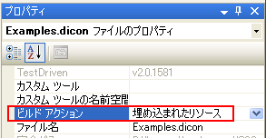

上へ
上へS2Container.NETのDIContainerをS2Containerと呼びます。
S2Containerを使用するためには、定義ファイルを作成する必要があります。 定義ファイルは、コンポーネントを組み立てるための設計書のようなものです。 形式はXMLで、拡張子は、diconです。（xmlでも特に問題はありません）diconは、ダイコンと読みます。
S2Containerの定義は、次のようになります。
<?xml version="1.0" encoding="utf-8"?> <!DOCTYPE components PUBLIC "-//SEASAR2.1//DTD S2Container//EN" "http://www.seasar.org/dtd/components21.dtd"> <components> <component name="..." class="..."> ... </component> <component name="..." class="..."> ... </component> </components>
DOCTYPEは省略できません。diconファイルを作成する場合は、上記のサンプルをコピー＆ペーストしてください。 ルートはcomponentsタグです。 コンポーネントごとに、componentタグを定義していきます。 componentタグのclass属性でコンポーネントのクラスの完全限定名を指定します。 name属性には、コンポーネント名を指定します。 詳細は、Dicon タグリファレンスを参照してください。
<components> <component name="hoge" class="Seasar.Examples.Dicon.HogeImpl"/> </components>
定義ファイルは、埋め込まれたリソースもしくはファイルシステムで指定することができます。 Visual Studio 2005のWebサイトプロジェクトでは埋め込まれたリソースにすることが出来ません。 ファイルシステムを使用するか別のクラスライブラリプロジェクト等を作成して、そこに埋め込む必要があります。
埋め込まれたリソースを使用する場合は、引数pathは定義ファイルの名前空間を含む完全限定名です。 セパレータは、[ / ](スラッシュ)もしくは[ . ](ピリオド)です。 定義ファイルのビルドアクションプロパティは、埋め込まれたリソースに設定します。

C#プロジェクトの場合は、フォルダを作成すると名前空間が作成されます。 VB.NETプロジェクトの場合は、フォルダを作成しても名前空間は作成されません。 例えば、プロジェクトフォルダ/Sample/Logic/aaa.diconとすると、C#プロジェクトの場合は、既定の名前空間/Sample/Logic/aaa.diconになります。 VB.NETの場合は、既定の名前空間/aaa.diconになります。
ファイルシステムを使用する場合は、一般的なファイルパスを指定します。絶対パス、相対パスを指定できます。
埋め込まれたリソース、ファイルシステムの定義ファイルを混在させることもできます。 同じパスで埋め込まれたリソース、ファイルシステムの両方でヒットする場合は、ファイルシステムの定義ファイルが優先されます。
S2Containerを生成する方法は二通りあります。
- SingletonS2ContainerFactoryを使用する
- S2ContainerFactoryを使用する
SingletonS2ContainerFactoryを使用する
SingletonS2ContainerFactoryを使用する場合は、次のメソッドを使用します。
- Seasar.Framework.Container.Factory.SingletonS2ContainerFactory#Init()
定義ファイルはアプリケーション構成ファイルの<seasar>セクションで指定した定義ファイルが使われます。 アプリケーション構成ファイルで指定していない場合はapp.diconが使われます。
作成したS2Containerはsingletonであるため、どこからでも次のプロパティから取得することができます。
- Seasar.Framework.Container.Factory.SingletonS2ContainerFactory#Container
C#
SingletonS2ContainerFactory.Init(); ... IS2Container container = SingletonS2ContainerFactory.Container;
定義ファイルのパスを指定する場合はInit()メソッドを呼び出す前に次のプロパティで指定します。
- Seasar.Framework.Container.Factory.SingletonS2ContainerFactory#ConfigPath
C#
private const string PATH = "aaa/bbb/ccc.dicon"; ... SingletonS2ContainerFactory.ConfigPath = PATH; SingletonS2ContainerFactory.Init(); ... IS2Container container = SingletonS2ContainerFactory.Container;
S2ContainerFactoryを使用する
S2Containerを作成する場合は、次のメソッドを使用します。
- Seasar.Framework.Container.Factory.S2ContainerFactory#Create(string path)
S2Containerを生成した後に次のメソッドでS2Containerを初期化します。
- Seasar.Framework.Container.IS2Container#Init()
C#
private const string PATH = "aaa/bbb/ccc.dicon"; ... IS2Container container = S2ContainerFactory.Create(PATH); container.Init();
この方法で取得したコンテナのインスタンスはアプリケーションで管理する必要があります。
S2Containerを生成した後に次のメソッドでS2Containerを初期化することができます。
- Seasar.Framework.Container.IS2Container#Init()
初期化を行うとインスタンス属性がsingletonに設定されているコンポーネントのインスタンスが生成されます。
Windowsアプリケーションのようにアプリケーションの起動をなるべく早く行いたい場合には、 次のように初期化を行わずにS2Container.NETを利用することもできます。 初期化を行わない場合は、GetComponentでコンポーネントを取得した際に、 そのコンポーネントとそれに必要なコンポーネントのインスタンスを生成します。
C#
// アプリケーション構成ファイルで設定されたDiconファイルのパスを取得する string diconPath = SingletonS2ContainerFactory.ConfigPath; // SingletonS2ContainerFactoryは初期化を行わないと // S2Containerを作成できないのでS2ContainerFactoryを利用する IS2Container container = S2ContainerFactory.Create(diconPath); // どこかれでもS2Containerが取得できるようにSingletonS2ContainerFactoryに // S2Containerをセットする SingletonS2ContainerFactory.Container = container; // 開始画面を取得する StartForm form = (StartForm) container.GetComponent(typeof(StartForm)); // アプリケーションを起動する Application.Run(form);
S2Containerからコンポーネントを取り出すには、次のメソッドを使用します。
- Seasar.Framework.Container.IS2Container#GetComponent(object componentKey)
引数には、コンポーネントの型宣言を表すSystem.Typeもしくはコンポーネント名を指定できます。 詳しくは、componentタグを参照してください。
コンポーネントのクラスを指定する場合、コンポーネント is クラスがtrueを返すクラスなら 指定することができます。 しかし、S2Containerの中に指定したクラスを実装しているコンポーネントが複数ある場合、 S2Containerは、どのコンポーネントを返せばよいのか判断できないため、TooManyRegistrationRuntimeExceptionが発生します。 実装コンポーネントがユニークに決まるクラスを指定してください。
コンポーネント名で取得することもできます。 その場合も、同一の名前をもつコンポーネントが複数登録されている場合、TooManyRegistrationRuntimeExceptionが発生します。 コンポーネント名指定の場合、スペルミスをする可能性もあるので、できるだけクラス指定のほうが良いでしょう。
例） クラスを指定してコンポーネントを取得する場合
IS2Container container = S2ContainerFactory.Create(PATH);
Hoge hoge = (Hoge) container.GetComponent(typeof(Hoge));
例） コンポーネント名を指定してコンポーネントを取得する場合
IS2Container container = S2ContainerFactory.Create(PATH);
Hoge hoge = (Hoge) container.GetComponent("hoge");
アプリケーション構成ファイル（※diconファイルではありません）に<seasar>構成セクションを追加することができます。 <seasar>構成セクションでは、ルートとなる定義ファイル(diconファイル）、 S2Container作成時にロードするアセンブリを指定することができます。
指定された定義ファイルは、Seasar.Framework.Container.Factory.SingletonS2ContainerFactory#Init が呼び出されたときに、ルートの定義ファイルとしてセットされます。
指定されたアセンブリは、Seasar.Framework.Container.Factory.S2ContainerFactory#Create が呼び出されたときに、アプリケーションドメインに読み込まれます。
diconファイルに登録したクラスが見つからずにClassNotFoundRuntimeExceptionが発生する場合は、 <assemblys>にアセンブリを指定することを忘れていないか確認してみてください。
<configuration> <configSections> <section name="seasar" type="Seasar.Framework.Xml.S2SectionHandler, Seasar" /> </configSections> <seasar> <!-- SingletonS2ContainerFactory#Initで下記で指定されたdiconファイルを ルートのdiconファイルの初期値としてセットします。 --> <configPath>App.dicon</configPath> <!-- S2コンテナ作成時に以下で指定されたアセンブリをAppDomainに 読み込みます。（S2ContainerFactory#Create） --> <assemblys> <assembly>アセンブリ名1</assembly> <assembly>アセンブリ名2</assembly> </assemblys> </seasar> </configuration>
Dependency Injectionには、コンポーネントの構成に必要な値をコンストラクタで設定する (Constructor Injection)のか、 プロパティのsetアクセサで設定する(Property Injection)のか、初期化メソッドで設定する(Method Injection)のかで、タイプが分かれます。 Method InjectionはS2のオリジナルです。(S2Container.NETでもサポート） S2Container.NETはすべてのタイプとそのハイブリッド型もサポートします。
コンストラクタ・インジェクション
コンストラクタ・インジェクションとは、任意のコンストラクタの引数値にDependency Injectionします。 S2Containerの定義ファイルには、次の内容を記述します。
- コンポーネントの指定
コンポーネントは、componentタグで組み立てます。 class属性でクラス名を指定します。 name属性でコンポーネントに名前を付けることもできます。 - コンストラクタの引数の指定
コンポーネントのコンストラクタの引数は、 componentタグの子タグであるargタグを使って指定します。 文字列の場合は、 ダブルコーテーション(")で囲みます。
<components> <component name="..." class="..."> <arg>...</arg> </component> </components>
詳しい使用方法は、 Exampleのコンストラクタ・インジェクションを参照してください。
プロパティ･インジェクション
プロパティ･インジェクションとは、任意のプロパティにsetアクセサを使用してProperty Injectionします。 S2Containerの定義ファイルには、次の内容を記述します。
- コンポーネントの指定
コンポーネントの指定は、コンストラクタ・インジェクションと同様です。 name属性でコンポーネントに名前を付けることもできます。 - プロパティの指定
コンポーネントのプロパティは、componentタグの子タグであるpropertyタグを使って指定します。 name属性でプロパティ名を指定します。
<components> <component name="..." class="..."> <property name="...">...</property> </component> </components>
詳しい使用方法は、 Exampleのプロパティ・インジェクションを参照してください。
メソッド･インジェクション
メソッド・インジェクションとは、任意のメソッドを呼び出して、Dependency Injectionします。 S2Containerの定義ファイルには、次の内容を記述します。
- コンポーネントの指定
コンポーネントの指定は、コンストラクタ・インジェクションと同様です。 name属性でコンポーネントに名前を付けることもできます。 - 初期化メソッドの指定
initMethodタグを使って、コンポーネントの任意のメソッドを呼び出します。 name属性で、メソッド名を指定します。 引数は、argタグを子タグに使います。 name属性を省略して、ボディで、JScript.NETを使うこともできます。 その際、コンポーネント自身はselfで表します。
<components> <component name="..." class="..."> <initMethod>...</initMethod> </component> </components>
詳しい使用方法は、 Exampleのメソッド・インジェクションを参照してください。
すべてのコンポーネントを1つのファイルに記述すると、直ぐに肥大化してしまい管理が難しくなります。 そのため、コンポーネントの定義を複数に分割する機能と分割された定義をインクルードして1つにまとめる機能がS2Containerにあります。 S2Container定義ファイルのインクルードは次のようにして行います。
<components> <include path="bar.dicon"/> </components>
includeタグのpath属性で取り込みたいS2Container定義ファイルのパスを指定します。 詳しくは、includeタグを参照してください。
コンポーネントの検索順は、先ず自分自身に登録されているコンポーネントを探して、見つからない場合は、 includeされている順に子供のS2Containerに登録されているコンポーネントを検索し、最初に見つかったコンポーネントが返されます。 次のような場合は、Foo(自身のコンポーネント)→aaa(子供のS2Container)→bbb(子供のS2Container)の順に検索します。
<components> <include path="aaa.dicon"/> <include path="bbb.dicon"/> <component class="Examples.Container.Foo" /> </components>
自動でコンストラクタ・インジェクションやプロパティ・インジェクションを行う場合、 S2Containerはインクルード先のコンポーネントを自動インジェクションすることができます。 自動でDependency Injectionを行う場合の条件は自動バインディングを参照してください。
次のようにセッター･インジェクションでプロパティに指定するコンポーネントがインクルード先のaaa.diconとbbb.diconに登録されている場合、 各HelloClientでは、どちらのコンポーネントが使用されるかをみてましょう。
root.dicon
<components> <include path="Seasar.Examples/Reference/Includes/aaa.dicon"/> <include path="Seasar.Examples/Reference/Includes/bbb.dicon"/> <component name="root" class="Seasar.Examples.Reference.Includes.Impl.HelloClientImpl"/> </components>
aaa.dicon
<components> <component class="Seasar.Examples.Reference.Includes.Impl.HelloImpl"> <property name="Message">"Hello Aaa!"</property> </component> <component name="aaa" class="Seasar.Examples.Reference.Includes.Impl.HelloClientImpl"/> </components>
bbb.dicon
<components> <component class="Seasar.Examples.Reference.Includes.Impl.HelloImpl"> <property name="Message">"Hello Bbb!"</property> </component> <component name="bbb" class="Seasar.Examples.Reference.Includes.HelloClientImpl"/> </components>
各コンポーネントの内容は、次のようになります。
C# (IHelloClient)
namespace Seasar.Examples.Reference.Includes { public interface IHelloClient { void ShowMessage(); } }
C# (HelloClientImpl)
namespace Seasar.Examples.Reference.Includes.Impl { public class HelloClientImpl : IHelloClient { private IHello hello; public HelloClientImpl() {} public IHello Hello { get { return this.hello; } set { this.hello = value; } } public void ShowMessage() { Console.WriteLine(this.Hello.Message); } } }
C# (IHello)
namespace Seasar.Examples.Reference.Includes { public interface IHello { string Message { set; get; } } }
C# (HelloImpl)
namespace Seasar.Examples.Reference.Includes.Impl { public class HelloImpl : IHello { private string helloMessage; public HelloImpl() {} public string Message { get { return this.helloMessage; } set { this.helloMessage = value; } } } }
HelloImplはMessageプロパティを定義しているだけです。 HelloClientのShowMessage()を呼び出した場合の実行結果は次のようになります。
rootの実行結果
Hello Aaa!
まず、S2Containerはroot.diconにHelloImplが登録されているかを検索します。 root.diconにはないので、次にインクルード先のaaa.diconを検索します。 aaa.diconにはHelloImplが登録されているので、そのコンポーネントを使用します。
aaaの実行結果
Hello Aaa!
aaaは、aaa.diconに登録されているコンポーネントを使用します。 自動でインジェクションを行う場合、子供のS2Containerは親のS2Containerのコンポーネントを使用することはできません。 例えば、root.diconにHelloImplを登録していてもaaaには自動インジェクションされないということです。
bbbの実行結果
Hello Bbb!
aaaと同様にbbbもbbb.diconに登録されているコンポーネントを使用します。 このサンプルは、Seasar.ExamplesプロジェクトのS2/NET/Examples/Reference/Includes以下に用意されています。
コンポーネントの定義を分割した場合に、複数のコンポーネント定義間で名前が衝突しないように、 componentsタグのnamespace属性で名前空間を指定することができます。
foo.dicon
<components namespace="Foo"> <component name="aaa" .../> <component name="bbb" ...> <arg>aaa</arg> </component> </components>
bar.dicon
<components namespace="Bar"> <include path="foo.dicon"/> <component name="aaa" .../> <component name="bbb" ...> <arg>aaa</arg> </component> <component name="ccc" ...> <arg>foo.aaa</arg> </component> </components>
app.dicon
<components> <include path="bar.dicon"/> </components>
同一のコンポーネント定義内では、名前空間なしで参照できます。 他のS2Container定義のコンポーネントを参照する場合は、名前空間.をコンポーネント名の頭につけます。 foo.aaaとbar.aaaは同じ名前がついていますが、名前空間が異なっているので、違うコンポーネントとして認識されます。 慣習として、定義ファイルの名前は、名前空間.diconにすることを推奨します。
S2Containerで、コンポーネントのインスタンスをどのように管理するのかを指定するのが、 componentタグのinstance属性です。 デフォルトはsingletonで、 これは、IS2Container.GetComponent()によって返されるコンポーネントは常に同じだという意味です。
IS2Container.GetComponent()を呼び出すたびに、 新たに作成されたコンポーネントを返して欲しい場合は、instance属性にprototypeを指定します。 リクエスト(System.Web.HttpRequest)ごとにコンポーネントを管理したい場合は、instance属性にrequestを指定します。 セッション(System.Web.SessionState.HttpSessionState)ごとにコンポーネントを管理したい場合は、instance属性にsessionを指定します。
プレゼンテーションのフレームワークと組み合わせるときに、プレゼンテーションフレームワークが作成したインスタンスに対して、 S2Containerで管理されているコンポーネントをセットしたい場合があります。 そのようなS2Container外のコンポーネントに対してDependency Injectionしたいときには、 Seasar.Framework.Container.IS2Containerの次のメソッドを使用します。
- IS2Container#InjectDependency(Object outerComponent)
- IS2Container#InjectDependency(Object outerComponent, Type componentType)
- IS2Container#InjectDependency(Object outerComponent, string componentName)
第一引数には、外部のコンポーネントを指定します。第二引数には、外部コンポーネントのクラス、またはコンポーネント名を指定します。 そのとき、S2Container定義では、instance属性にouterを指定します。
| instance属性 | 説明 |
|---|---|
| singleton(default) | IS2Container.GetComponent()を何度呼び出しても同じインスタンスが返されます。 |
| prototype | IS2Container.GetComponent()を呼び出すたびに新たなインスタンスが返されます。 |
| request | リクエスト毎に1つのインスタンスが作成されます。 name属性に指定した名前で、コンポーネントがリクエストに格納されます。 requestを使う場合は、S2HttpModuleを設定する必要があります。 |
| session | セッション毎に1つのインスタンスが作成されます。 name属性に指定した名前で、コンポーネントがセッションに格納されます。 sessionを使う場合は、S2HttpModuleを設定する必要があります。 |
| outer | コンポーネントのインスタンスは、S2Container外で作成し、Dependency Injectionだけを行います。 アスペクト、コンストラクタ・インジェクションは適用できません。 |
initMethodやdestroyMethodでコンポーネントのライフサイクルもコンテナで管理することができます。 S2Containerの開始時(S2Container.Init())にinitMethodタグで指定したメソッドが呼び出され、 S2Containerの終了時(S2Container.Destroy())にdestroyMethodタグで指定したメソッドが呼び出されるようになります。
initMethodはコンポーネントがコンテナに登録した順番に実行され、destroyMethodはその逆順に呼び出されることになります。 instance属性がsingleton以外の場合、destroyMethodを指定しても無視されます。
System.Collections.Hashtable#Add()メソッドに初期化(aaaに111を設定)・終了処理(aaaにnullを設定)を設定する場合は、次のようになります。
<components namespace="bar"> <component name="table" class="System.Collections.Hashtable"> <initMethod name="Add"> <arg>"aaa"</arg> <arg>111</arg> </initMethod> <destroyMethod name="Add"> <arg>"aaa"</arg> <arg>null</arg> </destroyMethod> </component> </components>
コンポーネント間の依存関係は、型がインターフェースの場合、コンテナによって自動的に解決されます。 これがS2Containerのデフォルトですが、componentタグのautoBinding属性を指定することで細かく制御することもできます。
S2Container.NET 1.2.6以降では、System.Windows.Forms.Formクラスが持つAcceptButton, CancelButton, Siteの3つのプロパティは、自動バインディングの対象外になります。
| autoBinding属性 | 説明 |
|---|---|
| auto(default) |
コンストラクタの引数が明示的に指定されている場合は、それに従います。 指定されていない場合、引数のないデフォルトコンストラクタが定義されている場合はそのコンストラクタを使います。 デフォルトのコンストラクタがない場合、コンストラクタの引数の数が1以上で、 引数の型がすべてインターフェースのコンストラクタで最も引数の数が多いものを使います。 プロパティが明示的に指定されている場合はそれに従います。 明示的に指定されていないプロパティで、型がインターフェースの場合は自動的にバインドします。 |
| constructor |
コンストラクタの引数が明示的に指定されている場合は、それに従います。 指定されていない場合、引数のないデフォルトコンストラクタが定義されている場合はそのコンストラクタを使います。 デフォルトのコンストラクタがない場合、コンストラクタの引数の数が1以上で、引数の型がすべてインターフェースのコンストラクタで最も引数の数が多いものを使います。 |
| property |
コンストラクタの引数が明示的に指定されている場合は、それに従います。 指定されていない場合は、デフォルトのコンストラクタを使います。 型がインターフェースのプロパティを自動的にバインドします。 |
| none |
コンストラクタの引数が明示的に指定されている場合は、それに従います。 プロパティが明示的に指定されている場合はそれに従います。 |
詳しくは、自動バインディング(コンストラクタ・インジェクション)と自動バインディング(プロパティ・インジェクション)を参照してください。
コンポーネントはS2Containerに依存しないことが望ましいのですが、コンポーネントによっては、 S2Containerのメソッドを呼び出したい場合もあるでしょう。S2Container自身もcontainerという名前で、 登録されているので、arg,propertyタグのボディでcontainerを指定することで、コンテナのインスタンスを取得できます。 また、S2Container型のプロパティを定義しておいて自動バインディングで設定することもできます。
<components> <component class="Examples.Dicon.BarImpl"> <arg>container</arg> </component> <component class="Examples.Dicon.FooImpl"> <property name="Foo">container</property> </component> </components>
すべてのS2Container定義のルートになる定義ファイルは、慣例でapp.diconという名前にします。 app.diconにはコンポーネントの定義はしないようにしてください。通常は名前空間の付かない場所に埋め込まれたリソースとして配置しておくと良いでしょう。
<components> <include path="Examples/foo.dicon"/> <include path="Examples/bar.dicon"/> <!-- 定義ファイルの数分記述します --> </components>
コンポーネントにAOPを適用することもできます。 ただし現在のS2Container.NETではAOPを適用するには、 System.MarshalByRefObjectの派生クラスであるか、インターフェース型でコンポーネントを受け取る必要があります。
例えば、ArrayListにTraceInterceptorを適用したい場合次のようにします。
<components> <component name="traceInterceptor" class="Seasar.Framework.Aop.Interceptors.TraceInterceptor"/> <component class="System.Collections.ArrayList"> <aspect>traceInterceptor</aspect> </component> <component class="TestSeasar.Framework.Container.Factory.AspectTagHandlerTest+FooImpl"> <aspect pointcut="Time, GetHashCode">traceInterceptor</aspect> </component> </components>
aspectタグのボディでInterceptorの名前を指定します。 pointcut属性にカンマ区切りで対象となるメソッド名・プロパティ名を指定することができます。 pointcut属性を指定しない場合は、コンポーネントが実装しているインターフェースのすべてのメソッドが対象になります。 メソッド名には正規表現(System.Text.RegularExpressions.Regex)も使えます。
この定義を使うサンプルは次のようになります。
C#
private const string PATH = "Framework/Container/Factory/AspectTagHandlerTest.dicon"; [Test] public void TestAspect() { IS2Container container = S2ContainerFactory.Create(PATH); IList list = (IList) container.GetComponent(typeof(IList)); int count = list.Count; IFoo foo = (IFoo) container.GetComponent(typeof(IFoo)); int time = foo.Time; foo.ToString(); int hashCode = foo.GetHashCode(); } public interface IFoo { int Time { get; } int GetHashCode(); string ToString(); } public class FooImpl : IFoo { private int time_ = 3; public FooImpl() { } #region IFoo メンバ public int Time { get { return time_; } } public override int GetHashCode() { return base.GetHashCode(); } public override string ToString() { return time_.ToString(); } #endregion }
実行結果は次のようになります。（名前空間は省略）
BEGIN System.Collections.ICollection#get_Count() END System.Collections.ICollection#get_Count() : 0 BEGIN AspectTagHandlerTest+IFoo#get_Time() END AspectTagHandlerTest+IFoo#get_Time() : 3 BEGIN AspectTagHandlerTest+IFoo#GetHashCode() END AspectTagHandlerTest+IFoo#GetHashCode() : 1168
components、component、arg、propertyタグにメタデータを指定することもできます。 metaタグはメタデータを指定したいタグの子タグに指定します。例えば、componentsタグにメタデータを指定したい場合次のようにします。
<components> <meta name="aaa">111</meta> </components>
components、component、arg、propertyタグに指定したメタデータの情報は、 IS2Container、IComponentDef、IArgDef、IPropertyDefで定義されている次のメソッドで取得することが出来ます。
- public int MetaDefSize
- public IMetaDef GetMetaDef(int index)
- public IMetaDef GetMetaDef(string name)
- public IMetaDef[] GetMetaDefs(string name)
自動バインディングにより DI の設定はほぼ自動化できます。 さらに、コンポーネントの登録も自動化してしまおうというのが、コンポーネントの自動登録です。
下記のように AssemblyComponentAutoRegister を登録することでコンポーネントの自動登録を行うことができます。 AssemblyComponentAutoRegister はアセンブリから名前空間とクラス名のパターンを元に登録対象を検索して登録を行います。
<component class="Seasar.Framework.Container.AutoRegister.AssemblyComponentAutoRegister"> <property name="AssemblyName">"HogeAssembly"</property> <initMethod name="AddClassPattern"> <arg>"Hoge.Fuga.Logic"</arg> <arg>".*Logic"</arg> </initMethod> <initMethod name="RegisterAll" /> </component>
コンポーネントの自動設定を行う為には、設定の順番に注意が必要です。 自動登録されたコンポーネントを DI して利用するコンポーネントは、自動登録の設定より後に記述する必要があります。
この制限は、通常 Dicon ファイルを解析するタイミングでコンポーネントの登録が行われますが、 自動登録を利用した場合はコンテナの初期化のタイミングでコンポーネントの登録を行うために発生するものです。
<components> <!-- 1.コンポーネントの自動登録 --> <component class= "Seasar.Framework.Container.AutoRegister.AssemblyComponentAutoRegister"> ... </component> <!-- 2.自動登録されたコンポーネントを利用するコンポーネント --> <component class="..."> ... </component> ... </components>
Seasar.Framework.Container.AutoRegister.AssemblyComponentAutoRegister には以下のプロパティとメソッドが用意されています。
| プロパティ | 説明 |
|---|---|
| InstanceMode |
自動登録されるコンポーネントに適用する InstanceMode を文字列で指定します。 デフォルトは "singleton" です。 |
| AutoBindingMode |
自動登録されるコンポーネントに適用する AutoBindingMode を文字列で指定します。 デフォルトは "auto" です。 |
| AutoNaming |
クラス名からコンポーネント名を自動的に決定するコンポーネントです。 Seasar.Framework.Container.AutoRegister.IAutoNaming インターフェースを実装している必要があります。デフォルトは Seasar.Framework.Container.AutoRegister.DefaultAutoNaming クラスのインスタンスになります。 |
| AssemblyName |
自動登録するコンポーネントを検索するアセンブリの簡易名を文字列で指定します。
省略した場合はアプリケーションドメインに読み込まれている全てのアセンブリから検索を行います。
アセンブリの簡易名は Visual Studio でプロジェクトのプロパティを表示すると確認することができます。
下図の赤枠で囲まれた「アセンブリ名」がアセンブリの簡易名になります。
|
| メソッド | 説明 |
|---|---|
| AddClassPattern |
自動登録したいクラスパターンを登録します。最初の引数にはコンポーネントの名前空間を指定します。 子供の名前空間も再帰的に検索します。2番目の引数にはクラス名を指定します。 正規表現 (System.Text.RegularExpressions.Regex) が使えます。 「,」区切りで複数記述することもできます。 |
| AddIgnoreClassPattern |
自動登録したくないクラスパターンを登録します。最初の引数にはコンポーネントの名前空間を指定します。 子供の名前空間も再帰的に検索します。2番目の引数にはクラス名を指定します。 正規表現 (System.Text.RegularExpressions.Regex) が使えます。 「,」区切りで複数記述することもできます。 |
| RegisterAll |
AddClassPattern や AddIgnoreClassPattern を呼び出した後に RegisterAll メソッドを呼び出してコンポーネントの自動登録を実行する必要があります。 initMehtod タグで指定してください。引数はありません。 (Java の Seasar2 では呼び出す必要はありませんが .NET では必要となります) |
DefaultAutoNaming による名前の決定
自動登録されるコンポーネントの名前は Seasar.Framework.Container.AutoRegister.IAutoNaming インターフェースを実装したクラスを用意することで自由にカスタマイズすることが可能ですが、デフォルトでは Seasar.Framework.Container.AutoRegister.DefaultAutoNaming クラスが用意されます。
DefaultAutoNamingはインターフェースの場合はプリフィックスの "I" を取り除いたインターフェース名（名前空間は含まない）をコンポーネント名とします。 （ただし2文字目が大文字の場合のみ1文字目をプリフィックスと判断します） クラスの場合は名前空間を含まないクラス名をコンポーネント名とします。
コンポーネントの自動登録により、コンポーネントの登録は自動化できました。 さらに、アスペクトの登録も自動化してしまおうというのが、アスペクトの自動登録です。アスペクトについては aspect タグを参照してください。
下記のように AspectAutoRegister を登録することでアスペクトの自動登録を行うことができます。 AspectAutoRegister は名前空間とクラス名のパターンを元に登録対象のコンポーネントを検索して登録を行います。
<component class="Seasar.Framework.Container.AutoRegister.AspectAutoRegister"> <property name="Interceptor">TraceInterceptor</property> <initMethod name="AddClassPattern"> <arg>"Hoge.Fuga.Logic"</arg> <arg>".*Logic"</arg> </initMethod> <initMethod name="RegisterAll" /> </component> <component name="TraceInterceptor" class="Seasar.Framework.Aop.Interceptors.TraceInterceptor" />
アスペクトの自動設定を行う為には、設定の順番に注意が必要です。 アスペクトの自動登録の設定はアスペクトを適用するコンポーネントの定義より後に記述する必要があります。 また、アスペクトが適用されたコンポーネントを DI して利用するコンポーネントは、 アスペクトの自動登録の設定より後に記述する必要があります。
この制限は、通常 Dicon ファイルを解析するタイミングでアスペクトの設定を行いますが、 アスペクトの自動登録を利用した場合はコンポーネントの初期化のタイミングでアスペクトの設定を行うために発生するものです。
<components> <!-- 1.コンポーネントの自動登録 --> <component class= "Seasar.Framework.Container.AutoRegister.AssemblyComponentAutoRegister"> ... </component> <!-- 2.アスペクトの自動登録 --> <component class= "Seasar.Framework.Container.AutoRegister.AspectAutoRegister"> ... </component> <!-- 3.自動登録でアスペクトが適用されたコンポーネントを利用するコンポーネント --> <component class="..."> ... </component> ... </components>
Seasar.Framework.Container.AutoRegister.AspectAutoRegister には以下のプロパティとメソッドが用意されています。
| プロパティ | 説明 |
|---|---|
| Interceptor |
インターセプタを指定します。複数のインターセプタを指定したい場合は InterceptorChain を使ってください。 |
| Pointcut |
インターセプタを適用するメソッドをカンマ区切りで指定します。 Pointcutを指定しない場合は、アスペクトが適用可能な全てのメソッドが対象になります。 メソッド名には正規表現 (System.Text.RegularExpressions.Regex) も使えます。 |
| メソッド | 説明 |
|---|---|
| AddClassPattern |
自動登録したいクラスパターンを登録します。最初の引数にはコンポーネントの名前空間を指定します。 子供の名前空間も再帰的に検索します。2番目の引数にはクラス名を指定します。 正規表現 (System.Text.RegularExpressions.Regex) が使えます。 「,」区切りで複数記述することもできます。 |
| AddIgnoreClassPattern |
自動登録したくないクラスパターンを登録します。最初の引数にはコンポーネントの名前空間を指定します。 子供の名前空間も再帰的に検索します。2番目の引数にはクラス名を指定します。 正規表現 (System.Text.RegularExpressions.Regex) が使えます。 「,」区切りで複数記述することもできます。 |
| RegisterAll |
AddClassPattern や AddIgnoreClassPattern を呼び出した後に RegisterAll メソッドを呼び出してアスペクトの自動登録を実行する必要があります。 initMehtod タグで指定してください。引数はありません。 (Java の Seasar2 では呼び出す必要はありませんが .NET では必要となります) |